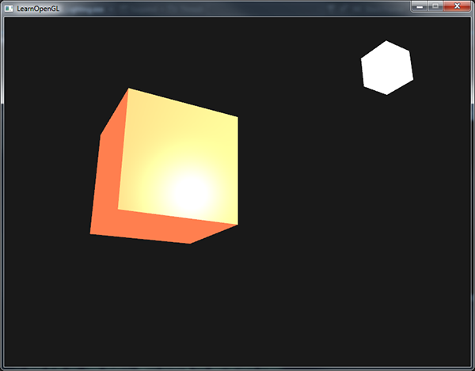

材质
| 原文 | Materials |
|---|---|
| 作者 | JoeyDeVries |
| 翻译 | Krasjet |
| 校对 | AoZhang |
在现实世界里，每个物体会对光产生不同的反应。比如，钢制物体看起来通常会比陶土花瓶更闪闪发光，一个木头箱子也不会与一个钢制箱子反射同样程度的光。有些物体反射光的时候不会有太多的散射(Scatter)，因而产生较小的高光点，而有些物体则会散射很多，产生一个有着更大半径的高光点。如果我们想要在OpenGL中模拟多种类型的物体，我们必须针对每种表面定义不同的
在上一节中，我们定义了一个物体和光的颜色，并结合环境光与镜面强度分量，来决定物体的视觉输出。当描述一个表面时，我们可以分别为三个光照分量定义一个材质颜色(Material Color)：环境光照(Ambient Lighting)、漫反射光照(Diffuse Lighting)和镜面光照(Specular Lighting)。通过为每个分量指定一个颜色，我们就能够对表面的颜色输出有细粒度的控制了。现在，我们再添加一个反光度(Shininess)分量，结合上述的三个颜色，我们就有了全部所需的材质属性了：
#version 330 core
struct Material {
vec3 ambient;
vec3 diffuse;
vec3 specular;
float shininess;
};
uniform Material material;
在片段着色器中，我们创建一个结构体(Struct)来储存物体的材质属性。我们也可以把它们储存为独立的uniform值，但是作为一个结构体来储存会更有条理一些。我们首先定义结构体的布局(Layout)，然后简单地以刚创建的结构体作为类型声明一个uniform变量。
如你所见，我们为风氏光照模型的每个分量都定义一个颜色向量。ambient材质向量定义了在环境光照下这个表面反射的是什么颜色，通常与表面的颜色相同。diffuse材质向量定义了在漫反射光照下表面的颜色。漫反射颜色（和环境光照一样）也被设置为我们期望的物体颜色。specular材质向量设置的是表面上镜面高光的颜色（或者甚至可能反映一个特定表面的颜色）。最后，shininess影响镜面高光的散射/半径。
有这4个元素定义一个物体的材质，我们能够模拟很多现实世界中的材质。devernay.free.fr中的一个表格展示了一系列材质属性，它们模拟了现实世界中的真实材质。下图展示了几组现实世界的材质参数值对我们的立方体的影响：

可以看到，通过正确地指定一个物体的材质属性，我们对这个物体的感知也就不同了。效果非常明显，但是要想获得更真实的效果，我们需要以更复杂的形状替换这个立方体。在模型加载章节中，我们会讨论更复杂的形状。
搞清楚一个物体正确的材质设定是个困难的工程，这主要需要实验和丰富的经验。用了不合适的材质而毁了物体的视觉质量是件经常发生的事。
让我们试着在着色器中实现这样的一个材质系统。
设置材质
我们在片段着色器中创建了一个材质结构体的uniform，所以下面我们希望修改一下光照的计算来遵从新的材质属性。由于所有材质变量都储存在一个结构体中，我们可以从uniform变量material中访问它们：
void main()
{
// 环境光
vec3 ambient = lightColor * material.ambient;
// 漫反射
vec3 norm = normalize(Normal);
vec3 lightDir = normalize(lightPos - FragPos);
float diff = max(dot(norm, lightDir), 0.0);
vec3 diffuse = lightColor * (diff * material.diffuse);
// 镜面光
vec3 viewDir = normalize(viewPos - FragPos);
vec3 reflectDir = reflect(-lightDir, norm);
float spec = pow(max(dot(viewDir, reflectDir), 0.0), material.shininess);
vec3 specular = lightColor * (spec * material.specular);
vec3 result = ambient + diffuse + specular;
FragColor = vec4(result, 1.0);
}
可以看到，我们现在在需要的地方访问了材质结构体中的所有属性，并且这次是根据材质的颜色来计算最终的输出颜色的。物体的每个材质属性都乘上了它们各自对应的光照分量。
我们现在可以通过设置适当的uniform来设置应用中物体的材质了。GLSL中一个结构体在设置uniform时并无任何区别，结构体只是充当uniform变量们的一个命名空间。所以如果想填充这个结构体的话，我们必须设置每个单独的uniform，但要以结构体名为前缀：
lightingShader.setVec3("material.ambient", 1.0f, 0.5f, 0.31f);
lightingShader.setVec3("material.diffuse", 1.0f, 0.5f, 0.31f);
lightingShader.setVec3("material.specular", 0.5f, 0.5f, 0.5f);
lightingShader.setFloat("material.shininess", 32.0f);
我们将环境光和漫反射分量设置成我们想要让物体所拥有的颜色，而将镜面分量设置为一个中等亮度的颜色，我们不希望镜面分量过于强烈。我们仍将反光度保持为32。
现在我们能够轻松地在应用中影响物体的材质了。运行程序，你会得到像这样的结果：

不过看起来真的不太对劲？
光的属性
这个物体太亮了。物体过亮的原因是环境光、漫反射和镜面光这三个颜色对任何一个光源都全力反射。光源对环境光、漫反射和镜面光分量也分别具有不同的强度。前面的章节中，我们通过使用一个强度值改变环境光和镜面光强度的方式解决了这个问题。我们想做类似的事情，但是这次是要为每个光照分量分别指定一个强度向量。如果我们假设lightColor是vec3(1.0)，代码会看起来像这样：
vec3 ambient = vec3(1.0) * material.ambient;
vec3 diffuse = vec3(1.0) * (diff * material.diffuse);
vec3 specular = vec3(1.0) * (spec * material.specular);
所以物体的每个材质属性对每一个光照分量都返回了最大的强度。对单个光源来说，这些vec3(1.0)值同样可以对每种光源分别改变，而这通常就是我们想要的。现在，物体的环境光分量完全地影响了立方体的颜色，可是环境光分量实际上不应该对最终的颜色有这么大的影响，所以我们会将光源的环境光强度设置为一个小一点的值，从而限制环境光颜色：
vec3 ambient = vec3(0.1) * material.ambient;
我们可以用同样的方式影响光源的漫反射和镜面光强度。这和我们在上一节中所做的极为相似，你可以认为我们已经创建了一些光照属性来影响各个光照分量。我们希望为光照属性创建类似材质结构体的东西：
struct Light {
vec3 position;
vec3 ambient;
vec3 diffuse;
vec3 specular;
};
uniform Light light;
一个光源对它的ambient、diffuse和specular光照分量有着不同的强度。环境光照通常被设置为一个比较低的强度，因为我们不希望环境光颜色太过主导。光源的漫反射分量通常被设置为我们希望光所具有的那个颜色，通常是一个比较明亮的白色。镜面光分量通常会保持为vec3(1.0)，以最大强度发光。注意我们也将光源的位置向量加入了结构体。
和材质uniform一样，我们需要更新片段着色器：
vec3 ambient = light.ambient * material.ambient;
vec3 diffuse = light.diffuse * (diff * material.diffuse);
vec3 specular = light.specular * (spec * material.specular);
我们接下来在应用中设置光照强度：
lightingShader.setVec3("light.ambient", 0.2f, 0.2f, 0.2f);
lightingShader.setVec3("light.diffuse", 0.5f, 0.5f, 0.5f); // 将光照调暗了一些以搭配场景
lightingShader.setVec3("light.specular", 1.0f, 1.0f, 1.0f);
现在我们已经调整了光照对物体材质的影响，我们得到了一个与上一节很相似的视觉效果。但这次我们有了对光照和物体材质的完全掌控：

改变物体的视觉效果现在变得相对容易了。让我们做点更有趣的事！
不同的光源颜色
到目前为止，我们都只对光源设置了从白到灰到黑范围内的颜色，这样只会改变物体各个分量的强度，而不是它的真正颜色。由于现在能够非常容易地访问光照的属性了，我们可以随着时间改变它们的颜色，从而获得一些非常有意思的效果。由于所有的东西都在片段着色器中配置好了，修改光源的颜色非常简单，并立刻创造一些很有趣的效果：
你可以看到，不同的光照颜色能够极大地影响物体的最终颜色输出。由于光照颜色能够直接影响物体能够反射的颜色（回想颜色这一节），这对视觉输出有着显著的影响。
我们可以利用
glm::vec3 lightColor;
lightColor.x = sin(glfwGetTime() * 2.0f);
lightColor.y = sin(glfwGetTime() * 0.7f);
lightColor.z = sin(glfwGetTime() * 1.3f);
glm::vec3 diffuseColor = lightColor * glm::vec3(0.5f); // 降低影响
glm::vec3 ambientColor = diffuseColor * glm::vec3(0.2f); // 很低的影响
lightingShader.setVec3("light.ambient", ambientColor);
lightingShader.setVec3("light.diffuse", diffuseColor);
尝试并实验一些光照和材质值，看看它们是怎样影响视觉输出的。你可以在这里找到应用的源码。